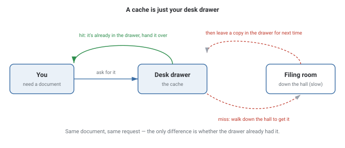
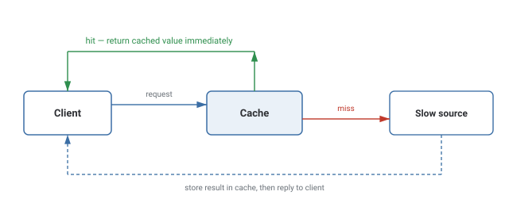
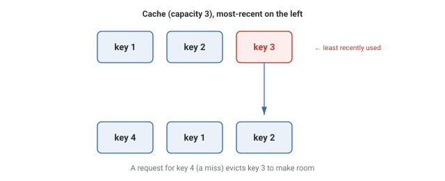

Caching
Storing the result of something expensive once, so the next request for the same thing is answered from fast memory instead of paying that cost again.
In Plain English
Think about keeping a document in your desk drawer instead of walking to the filing room down the hall every single time you need it.

A cache is nothing more than "keep a copy of the answer somewhere fast, so you don't redo the slow work every time someone asks the same question."
The hard part was never "store a copy" — it's "how do I know when the copy in the drawer is out of date?" That's the invalidation problem, and it's the part interviewers actually care about.
Theory & Diagrams
Why a cache exists
Some data is expensive to fetch — a database query, a slow external API, a heavy computation. A cache stores the result once, so a repeated request for the same thing is answered from fast memory instead of paying that cost again.

Eviction: LRU
A cache has finite space, so something is thrown out when it's full. Least Recently Used (LRU) evicts whichever entry hasn't been touched the longest, on the assumption that recently used values are more likely to be needed again soon.

Where a cache sits
In front of a database (query cache), in front of a slow computation (memoization), or in front of another service (a CDN caching a remote response). The mechanism is identical — only what's being cached changes.
Trade-offs
- Recently accessed data is genuinely likely to be accessed again soon (the common case).
- Access patterns shift over time and the cache needs to adapt automatically.
- A one-time scan through a huge dataset evicts genuinely "hot" entries to make room for keys that are never touched again.
- You need frequency, not recency, to decide what's actually valuable — that's LFU's job instead.
What interviewers are listening for: naming a concrete invalidation strategy (TTL vs. write-through invalidation) instead of treating "just cache it" as a complete answer, and recognizing that caching turns a data-freshness problem into a design decision rather than removing it.
If you're a fresher: knowing that a cache trades memory for speed, and that LRU evicts the entry that hasn't been touched the longest, is enough to answer most first-pass caching questions.
If you're ~3 years in: you should be able to describe a real staleness bug you hit — data in the cache that was wrong for a window of time — and whether you fixed it with a shorter TTL, active invalidation on write, or by accepting the staleness as a deliberate trade-off.
Real-World Examples
- Redis / Memcached — in-memory key-value stores used almost everywhere as a cache layer in front of a database.
- CDNs (Cloudflare, CloudFront, Akamai) — cache static assets at edge locations close to users, so most requests never reach the origin server.
- Browser HTTP cache — the browser caches responses based on
Cache-Controlheaders, skipping the network round-trip entirely for a repeat request. - CPU caches (L1/L2/L3) — the same eviction idea, applied at the hardware level to keep frequently accessed memory close to the processor.
Interview Questions
Click a question to reveal the answer.
How does an LRU cache decide what to evict?
It tracks access order. On every get or put, the accessed key moves to the "most recently used" end. When the cache is full, whatever sits at the "least recently used" end is evicted first.
Why use a cache instead of always going to the source?
Because the source — a database query, a remote API, a heavy computation — is slow relative to memory. A cache trades a small amount of memory for avoiding that repeated cost on every request for the same data.
What's the risk of caching, and how do you manage it?
Staleness — the cached value can drift out of sync with the real source. It's managed with a TTL (the entry expires after a fixed time) or explicit invalidation (the write path updates or clears the cache entry when the underlying data changes).
When would LRU be the wrong eviction policy?
When recency doesn't correlate with future use — a scan through a huge dataset touches every key once, and LRU evicts genuinely hot entries to make room for keys that are never touched again. LFU or a scan-resistant variant handles that case better.
Code & Output
A real LRU cache (fixed capacity 3) sitting in front of a deliberately slow source (a genuine sleep, standing in for a database round-trip). The same 10-key request sequence runs twice — once through the cache, once straight to the source — and the speedup below is a measured comparison of two real timed runs, not a hardcoded number.